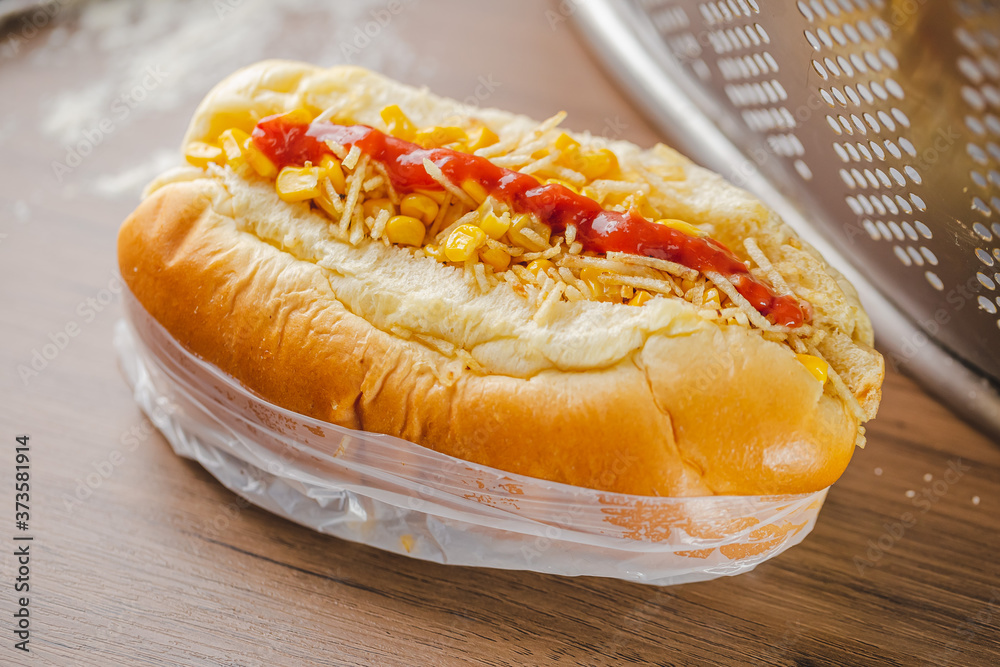

Hot dog

Typical south of Brasil hotdog
This dish is very common in some parts of Brasil and is a little different than the typical US hot dog that everybody knows.
We'll now learn the ingredients and how to make it
Ingredients
- Bread of your choice
- Some kind of sausage (it can be a regular meat version or some vegan sausage
- Potato sticks
- Canned corn
- Canned peas
- Grated parmesan Cheese
- Ketchup
- Mustard
- Mayonnaise
- Tomatoes or some kind of pre-made tomato sauce
Steps
- Start by cutting the bread in two and spreading some mayonnaise, ketchup and mustard on it.
- Now you need to get some sauce on it, but not too much, and place your sausage in the middle of the bread
- Mix the canned corn and peas and put it on the hotdog.
- Add the potato sticks on top and some grated parmesan cheese
- Enjoy!